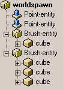
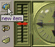
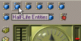
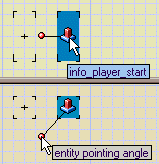
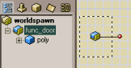
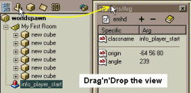
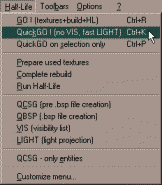

Using entities
Updated 25 Jul 2009
- QuArK Information Base
- 2. Map editing
- 2.1. Tutorial - Creating a map
|
|
Using entities
Updated 25 Jul 2009
|
Upper levels: - QuArK Information Base - 2. Map editing - 2.1. Tutorial - Creating a map |
|
2.1.3. Using entities |
[ - - ] |
This is the third part of four, which guides you through the methods and functions of creating a map in QuArK's map-editor. You should have read the first part and second part before going through this third part. Once you've completed this section, proceed to 'Advanced stuff' (optional). |
|
Index |
|
Two types of entities |
Decker - 01 Mar 2001 | [ Top ] |
|
 An entity is usually an object in the game, that the player can interact with. There are two types of entities:
Brush-entities requires that at least one brush is attached to the entity, as shown in the image. |
|
Creating entities |
Decker - 12 Sep 2008 | [ Top ] |
|
  To create a entity in QuArK, you choose it from either the prefabs / userdata panel or by clicking on the new item icon which will bring up the New map items... window, from where you also can choose between the different entities. Let's try it out. Create a info_player_start point-entity, by clicking on the new item icon, and find the entity in the folder named something like 'Player starts'. Then double-click on it, to bring it into the map.  Some of the point-entities have a bounding-box. This usually indicates, that the monster, player or 3D-model is that large, and the point-entity should not be embedded (either partly or whole) into brushes, as the monster/player will then get stuck. As the info_player_start entity has such a bounding-box, you should carefully place it inside your room. Make sure it does not touch any of the walls or the floor/ceiling. You may need to zoom in and change the grid size to place it just right. Whenever you have marked an entity, and if the entity requires it, you might see an entity pointing angle handle, or ball-handle as some call it. This will allow you to quickly control in what direction the entity should face, or move at. The ball-handle can be set in these positions; 0-360 degrees (0-360), upwards (-1) or downwards (-2), all depending on the game.  When you create a brush-entity , QuArK will automatically create a new brush and assign it to the newly created entity. If you do not want that brush, you can expand the brush-entity object in the tree-view, by clicking on the little icon (Just like in Windows' File-explorer), then select the brush in the brush-entity and delete it. This is also the way to add more brushes to a brush-entity. The entity has to be expanded, or empty (not having brushes assigned to it), for you to be able to drag and drop a brush into it. All this can only be done in the 'Tree-view (hierarchy-view)'. |
|
Setting values in the specifics/arg view |
Decker - 01 Mar 2001 | [ Top ] |
|
 There is another little feature in QuArK. You can have any of the data views open at all times. You do this by clicking on the tap for the view, and drag it to the place you want to drop it at. Try to do it as shown in the image. Drag the specifics/args view out, and drop it somewhere. Okay, so whats this specific/arg thingy then? Well, all entities requires some parameters, which the game-engine uses to figure out what the entity is and what it is supposed to do. These parameters are called specifics and arguments in QuArK. You could call them the entity's variables and values, if you want it in programming-terms. A specific that must always exist for every entity, is the classname specific. This is the 'variable-name' that the game-engine knows about, and ask what its argument (value) is. In the case where you have created a info_player_start entity, the classname argument is info_player_start , and so the game-engine knows that this entity will act as a info_player_start, and runs code to make it so. QuArK uses the argument of the classname specific in its tree-view. You can try to rename the info_player_start object in the tree-view, and see that it will also change in the specifics/args view too. Remember to undo your changes, so the info_player_start comes back again. Some point-entities require a point in 3D-space, to know where it must exist. This is the origin specific. It has tree arguments; X, Y and Z. QuArK has to know this origin, in order to show the entity in the 2D-views. However, since you can control the position of point-entities in the 2D-views, you never have to modify the arguments for the origin specific. There is also another specific that QuArK knows about; angle . Whenever this specific is present in the entity's specifics/args view and have an argument, and you have selected then entity, the entity pointing angle (ball-handle) will appear in the 2D-views. Try to change info_player_start's angle argument to some other value between 0 and 360. You will notice that the ball-handle will reflect the change. Setting values for an entity, is just the matter of typing them into the argument of the correct specifics, or selecting the proper checkboxes or listbox-items, that is shown in the specifics/args view for the entity. Notice that the listboxes are editable, so if you can't find an item in the list, you have to type it yourself.
|
|
Game related entities and arguments |
Decker - 25 Jul 2009 | [ Top ] |
|
As much as QuArK helps you along the way, giving you a wide array of entities, and within them their specifics and argument, you have to seek information about how to use the entities yourself, by;
You will find out that, even though the games that QuArK supports, are all based on the Quake-engine series by id Software, some entities do not act in the same way. An example: Creating a semi-transparent window... The more information you seek out, the better equiped you are to make good maps. See also 'Entities and other features that depend on the game only'. Okay enough of that. Lets put a light-source into your first room. I'm not going to tell you how, because as stated above; Think, Experiment and Learn.  Once you have put that light-source into your room, you are ready to build (compile) your map, and test it in the game. To build, you have several options in the game menu in the map-editor; GO! , QuickGO! and Complete rebuild . I suggest you activate the QuickGO! function, as this will; make QuArK export a .MAP file, run some of the build-programs, and then start the game you have choosen from QuArK Explorer Games menu. Errors might appear, like you haven't told QuArK where it can find the build-programs, then go to the 'Games' for the choosen game, and correct the problem. Other errors can come from the build process, and here you have to find out what is wrong, and try to fix it yourself (see also 'Compiling maps'). Of course, if its way over your head, you can write a message to the QuArK-forum asking for help. Just make sure you have supplied enough documentation on the error you get, so others can understand your problem. |
|
Next part |
Decker - 31 Aug 2008 | [ Top ] |
|
Once you've completed this section, proceed to 'Advanced stuff' (optional). |
|
Copyright (c) 2009, GNU General Public License by The QuArK (Quake Army Knife) Community - http://quark.sourceforge.net/ |
[ - Top - ] |
 You can add new specifics to your entity, by clicking on the plus icon
in the specifics/args view. This will give you a new line, where you have to
rename the specific and give it an argument. You can of cause also delete a
specific/arg by first selecting the specific and press the minus icon .
However, some specifics might not disappear when you try to delete them. That
is because these specifics are instructed to be available for input, and usually
part of the entity, that the game-engine parses.
You can add new specifics to your entity, by clicking on the plus icon
in the specifics/args view. This will give you a new line, where you have to
rename the specific and give it an argument. You can of cause also delete a
specific/arg by first selecting the specific and press the minus icon .
However, some specifics might not disappear when you try to delete them. That
is because these specifics are instructed to be available for input, and usually
part of the entity, that the game-engine parses.